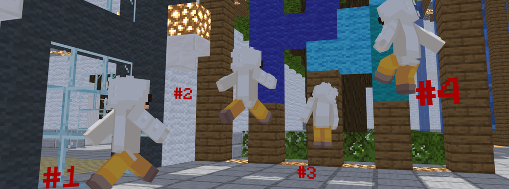

壁ジャンプ
BowyersMCで独自に実装をしているこの壁ジャンプは、プレイヤーの移動可能領域を格段にバフします。
地上に足がついていないときにスニークで正面の壁と接触することで、視点方向真逆へ壁を蹴るような挙動をします。
発動方法
- 対象のブロックに向けてダッシュ
- 壁に当たるように調整してジャンプ
- 飛びたい方向と逆に視点を向けてスニークで接触
- 壁を蹴って反対側へ壁をジャンプ！
WallBounceが有効化されている場合は、すべてのブロックでこの壁ジャンプが発動できます。
ゲーム設定で無効化されている場合は、すべてのエメラルドブロックに対して行うことで発動します。
有効の場合は、ゲーム開始時にアナウンスされます。